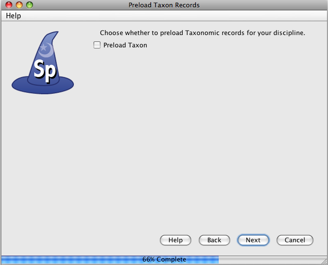

The Specify data management levels mimic the common levels of hierarchy within institutions. Access to information and Specify tools are then set at the various levels both within the application itself and through the User Permissions.
The Divisions, Disciplines and Collections for each institution are added in the System Configuration module of Specify; System > Collection Setup > Configuration. All tabs need to be closed before opening the Configuration. This tool is available to users in the Manager group only.
Information for the Institution can be edited in the Configuration tool.
Collections information in Specify 6 databases is also organized at these institution levels to meet requirements for data integrity and data sharing among collections. Some data elements are commonly shared among all collections within an institution, while others are shared only among collections in the same taxonomic discipline, i.e. "at the Discipline level" in Specify. Before creating the institution levels it is imperative that an administrator also understand the data that is held at each level to create the correct setup. A white paper for this is found at ...
When starting with an empty database the Division levels should be added first, then Discipline and then Collection. Each is added at the level above it. For instance, Divisions are added within the Institution form.
Editing a Division and Discipline is accomplished on the Discipline form. A Collection can be edited either on the Discipline form or Collection form.
Click the  Institution button on the side bar to edit the Institution or add a Division.
Institution button on the side bar to edit the Institution or add a Division.
At least one Division should appear in the Division sub form.
Click the  (add) button to add a Division.
(add) button to add a Division.
Name is the only required field and is used in any lists of Divisions within Specify as well as in the Institution Hierarchy.
Abbreviation refers to an existing abbreviation for the Division.
Alt Name provides another field for name. This is often useful when a particular Division has changed names or uses a longer name than is applicable to the Hierarchy list.
URI stands for Uniform Resource Identifier and refers to a resource on the internet (a Division web site).
Icon URI This is a field for ABCD field. This is the path to an icon on the website that could be downloaded by another institution and displayed on their website to indicate a partnership.
Is Accession Bound, when left unchecked alerts Specify that this Division does not share Accessions within the institution and will use its own accession table and Accession Number format. Check this box if the Accessions are shared within the Institution.
Click the  Division button on the side bar to edit a Division or add a Discipline.
Division button on the side bar to edit a Division or add a Discipline.
The Division form includes the information entered when the Division was added. The new Discipline will be added in the Division that is currently displayed in the Workspace. Use the navigation control at the bottom of the window to step to the Division that will include the new Discipline.

Navigation Control
In the Discipline sub form click the  (add) button to add a Discipline.
(add) button to add a Discipline.
A wizard will walk you through adding not only a Discipline, but a Collection within the Discipline as well as Taxon and Geography Tree Definitions and nodes (names of Taxa and Geographical locations) and Catalog and Accession number. Each of these windows is explained below.

Window 6
Discipline
Choose a Discipline Type from the drop-down menu. Specify uses this information to load the correct Forms, Trees and schema (tables and fields) within Specify.
The Name will display within Specify and can be anything you wish. It can be queried and used in reports. It can also be edited from within Specify.

Window 7
This table will create the tree definition for the Taxon tree. The Taxon tree operates at the Discipline level and can be used by all Collections within the Discipline you created in the last window.

The Specify Wizard not only defines the Taxon tree but also loads an authority file for your Discipline. This authority file was created using data from the Catalog of Life. If you choose to load the data into your tree when you open Specify and choose the Tree tab from the task bar, and Taxon tree from your side bar you will see a Taxon tree with hundreds of taxon nodes included. Then, when adding Collection Objects into your database you can simply choose a taxa from the Taxon field rather than adding each individually as needed.

Window 8
The Geography tree operates at the Discipline level and is used by all Collections within the Discipline.
The Wizard also loads data for the Geography tree, including Continents, Countries, and States throughout the world as well as Counties within the United States. This authority file was created using data from the Getty Thesaurus of Geographic Names.

Collection
Enter the Name and internationally recognized Collection Code to create a Collection within the Discipline. This is the name that will appear within Specify on the Collection form and can be queried and used in reports.
If you do not know your Collection Code ???

Window 9
Specify requires a unique Catalog Number for each specimen. It does not matter what Catalog Number a collection uses for a specimen as long as the number is unique. Many museums routinely assign these to incoming specimens. These numbers may require a format with specific sections for data such as Institution Code and year or they may simply use an incrementing number.
Catalog Numbers can either be unique to each Collection, shared by several or be used throughout the Institution. The Catalog Number chosen at this time will not affect where it is used relative to other Collections, this will be configured from within the Specify application.
Collections that do not use a specific format for their Catalog Number may choose 'None' and the Catalog Number will remain a text field on the forms where it appears.
Several formats are also available within this drop-down menu list:
xxx
xxx
To create your own format choose 'Create'. This will open the Field Formatting Editor. Please refer to Creating a Field Format.

Accessioning is the formal process by which a specimen or object is legally accepted and recorded as a museum item and differs from cataloging. This usually entails proof of ownership (in the form of a signed deed of gift) and legal collection (in the form of all associated permits - collecting, import and export). Accessioning and its numbering system is usually a policy adopted as a museum wide policy but is not used by all museums. An accession usually covers an entire field trip and multiple catalog items could be included within a single accession.
Institutions that do not use Accessions can simply click the Next button to proceed to the next window.
Accessions Numbers can either be kept at an Institution or Division level. This decision is based on whether your institution foresees having a person that would need to access all the Accessions for your institution, much like a registrar, or if the Accessions will only be accessed within the Division.
Click the  Discipline button on the side bar to edit a Discipline or add a Collection.
Discipline button on the side bar to edit a Discipline or add a Collection.
The Discipline information will appear at the top of the form with a Collections sub form underneath. The new Collection will be added in the Discipline that is currently displayed in the Workspace. Use the navigation control at the bottom of the window to step to the desired Discipline before adding the new Collection.

Navigation Control
Click the (add) button to add a Collection.
(add) button to add a Collection.
A Numbering Scheme dialog will appear. This refers to the Catalog Number.
Specify requires a unique catalog number for each specimen. It does not matter what catalog number a collection uses for a specimen as long as the number is unique. Many museums routinely assign catalog numbers to incoming specimens. Those institutions can create a format for their catalog numbers determined through the museum's accepted cataloging practices.
Some institutions do not use catalog numbers. Many herbaria, for example, have never maintained a printed catalog. Those institutions may question the need to assign each specimen a catalog number in Specify. But nothing in the Specify environment requires changes to the existing methods for organizing and storing specimens. For example, you can still store sheets by genus and species in phylogenetic or alphabetical order if that is your established procedure. If you do not use catalog numbers and do not want to assign a number just for Specify, you can configure Specify to automatically assign a catalog number to each new specimen numbers for all practical purposes.
To accept a numbering scheme simply click on the correct one in the list (or use the down-arrow key).
To add a numbering scheme -- Work in Progress!
Collection Form
The Collection Name will be used on any Specify Collection lists as well as in the Institution Hierarchy.
Add Collecting Event Automatically creates a new, unique Collecting Event record for each Collection Object. This is required for Collections that include a one-to-one relationship between their Collecting Event and Collection Object on their Collection Object form. When using the default Specify forms all Collections except those in an Ichthyology Discipline will need to check this box.
ABCD Schema Fields is a sub form for adding this information to the Collection.